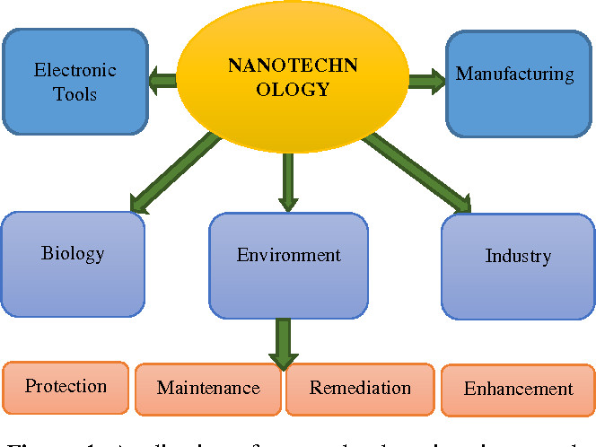

Nanotechnology is the understanding and control of matter at the nanoscale, at dimensions between approximately 1 and 100 nanometers, where unique phenomena enable novel applications. Matter can exhibit unusual physical, chemical, and biological properties at the nanoscale, differing in important ways from the properties of bulk materials, single atoms, and molecules. Some nanostructured materials are stronger or have different magnetic properties compared to other forms or sizes of the same material. Others are better at conducting heat or electricity. They may become more chemically reactive, reflect light better, or change color as their size or structure is altered.
Although modern nanoscience and nanotechnology are relatively new, nanoscale materials have been used for centuries. Gold and silver nanoparticles created colors in the stained-glass windows of medieval churches hundreds of years ago. The artists back then just didn’t know that they were using nanotechnology to create these beautiful works of art!
Nanotechnology encompasses nanoscale science, engineering, and technology in fields such as chemistry, biology, physics, materials science, and engineering. Nanotechnology research and development involves imaging, measuring, modeling, and manipulating matter between approximately 1–100 nanometers.
Applications of Nanotechnology
After more than 20 years of basic nanoscience research and more than fifteen years of focused R&D under the NNI, applications of nanotechnology are delivering in both expected and unexpected ways on nanotechnology’s promise to benefit society.
Nanotechnology is helping to considerably improve, even revolutionize, many technology and industry sectors: information technology, homeland security, medicine, transportation, energy, food safety, and environmental science, among many others. Described below is a sampling of the rapidly growing list of benefits and applications of nanotechnology.

Everyday Materials and Processes
Nanoscale additives to or surface treatments of fabrics can provide lightweight ballistic energy deflection in personal body armor, or can help them resist wrinkling, staining, and bacterial growth.
Clear nanoscale films on eyeglasses, computer and camera displays, windows, and other surfaces can make them water- and residue-repellent, antireflective, self-cleaning, resistant to ultraviolet or infrared light, antifog, antimicrobial, scratch-resistant, or electrically conductive.
Nanoscale materials are beginning to enable washable, durable “smart fabrics” equipped with flexible nanoscale sensors and electronics with capabilities for health monitoring, solar energy capture, and energy harvesting through movement.
Lightweighting of cars, trucks, airplanes, boats, and space craft could lead to significant fuel savings. Nanoscale additives in polymer composite materials are being used in baseball bats, tennis rackets, bicycles, motorcycle helmets, automobile parts, luggage, and power tool housings, making them lightweight, stiff, durable, and resilient. Carbon nanotube sheets are now being produced for use in next-generation air vehicles. For example, the combination of light weight and conductivity makes them ideal for applications such as electromagnetic shielding and thermal management.
Nano-bioengineering of enzymes is aiming to enable conversion of cellulose from wood chips, corn stalks, unfertilized perennial grasses, etc., into ethanol for fuel. Cellulosic nanomaterials have demonstrated potential applications in a wide array of industrial sectors, including electronics, construction, packaging, food, energy, health care, automotive, and defense. Cellulosic nanomaterials are projected to be less expensive than many other nanomaterials and, among other characteristics, tout an impressive strength-to-weight ratio.
Electronics and IT Applications
Transistors, the basic switches that enable all modern computing, have gotten smaller and smaller through nanotechnology. At the turn of the century, a typical transistor was 130 to 250 nanometers in size. In 2014, Intel created a 14 nanometer transistor, then IBM created the first seven nanometer transistor in 2015, and then Lawrence Berkeley National Lab demonstrated a one nanometer transistor in 2016! Smaller, faster, and better transistors may mean that soon your computer’s entire memory may be stored on a single tiny chip.
Flexible, bendable, foldable, rollable, and stretchable electronics are reaching into various sectors and are being integrated into a variety of products, including wearables, medical applications, aerospace applications, and the Internet of Things. Flexible electronics have been developed using, for example, semiconductor nanomembranes for applications in smartphone and e-reader displays. Other nanomaterials like graphene and cellulosic nanomaterials are being used for various types of flexible electronics to enable wearable and “tattoo” sensors, photovoltaics that can be sewn onto clothing, and electronic paper that can be rolled up. Making flat, flexible, lightweight, non-brittle, highly efficient electronics opens the door to countless smart products.
Nanoparticle copper suspensions have been developed as a safer, cheaper, and more reliable alternative to lead-based solder and other hazardous materials commonly used to fuse electronics in the assembly process.
Ultra-high definition displays and televisions are now being sold that use quantum dots to produce more vibrant colors while being more energy efficient.
Other computing and electronic products include Flash memory chips for smart phones and thumb drives; ultra-responsive hearing aids; antimicrobial/antibacterial coatings on keyboards and cell phone casings; conductive inks for printed electronics for RFID/smart cards/smart packaging; and flexible displays for e-book readers.
Medical and Healthcare Applications
Commercial applications have adapted gold nanoparticles as probes for the detection of targeted sequences of nucleic acids, and gold nanoparticles are also being clinically investigated as potential treatments for cancer and other diseases.
Better imaging and diagnostic tools enabled by nanotechnology are paving the way for earlier diagnosis, more individualized treatment options, and better therapeutic success rates.
Nanotechnology is being studied for both the diagnosis and treatment of atherosclerosis, or the buildup of plaque in arteries. In one technique, researchers created a nanoparticle that mimics the body’s “good” cholesterol, known as HDL (high-density lipoprotein), which helps to shrink plaque.
The design and engineering of advanced solid-state nanopore materials could allow for the development of novel gene sequencing technologies that enable single-molecule detection at low cost and high speed with minimal sample preparation and instrumentation.
Nanotechnology researchers are working on a number of different therapeutics where a nanoparticle can encapsulate or otherwise help to deliver medication directly to cancer cells and minimize the risk of damage to healthy tissue. This has the potential to change the way doctors treat cancer and dramatically reduce the toxic effects of chemotherapy.
Energy Applications
Nanotechnology is improving the efficiency of fuel production from raw petroleum materials through better catalysis. It is also enabling reduced fuel consumption in vehicles and power plants through higher-efficiency combustion and decreased friction.
Nanotechnology is also being applied to oil and gas extraction through, for example, the use of nanotechnology-enabled gas lift valves in offshore operations or the use of nanoparticles to detect microscopic down-well oil pipeline fractures.
Nanotechnology is already being used to develop many new kinds of batteries that are quicker-charging, more efficient, lighter weight, have a higher power density, and hold electrical charge longer.
In the area of energy harvesting, researchers are developing thin-film solar electric panels that can be fitted onto computer cases and flexible piezoelectric nanowires woven into clothing to generate usable energy on the go from light, friction, and/or body heat to power mobile electronic devices. Similarly, various nanoscience-based options are being pursued to convert waste heat in computers, automobiles, homes, power plants, etc., to usable electrical power.
Energy efficiency and energy saving products are increasing in number and types of application. In addition to those noted above, nanotechnology is enabling more efficient lighting systems; lighter and stronger vehicle chassis materials for the transportation sector; lower energy consumption in advanced electronics; and light-responsive smart coatings for glass.
Environmental Remediation
Nanotechnology could help meet the need for affordable, clean drinking water through rapid, low-cost detection and treatment of impurities in water.
Engineers have developed a thin film membrane with nanopores for energy-efficient desalination. This molybdenum disulphide (MoS2) membrane filtered two to five times more water than current conventional filters.
Nanoparticles are being developed to clean industrial water pollutants in ground water through chemical reactions that render the pollutants harmless. This process would cost less than methods that require pumping the water out of the ground for treatment.
Many airplane cabin and other types of air filters are nanotechnology-based filters that allow “mechanical filtration,” in which the fiber material creates nanoscale pores that trap particles larger than the size of the pores. The filters also may contain charcoal layers that remove odors.
Nanotechnology-enabled sensors and solutions are now able to detect and identify chemical or biological agents in the air and soil with much higher sensitivity than ever before. Researchers are investigating particles such as self-assembled monolayers on mesoporous supports (SAMMS™), dendrimers, and carbon nanotubes to determine how to apply their unique chemical and physical properties for various kinds of toxic site remediation. Another sensor has been developed by NASA as a smartphone extension that firefighters can use to monitor air quality around fires.